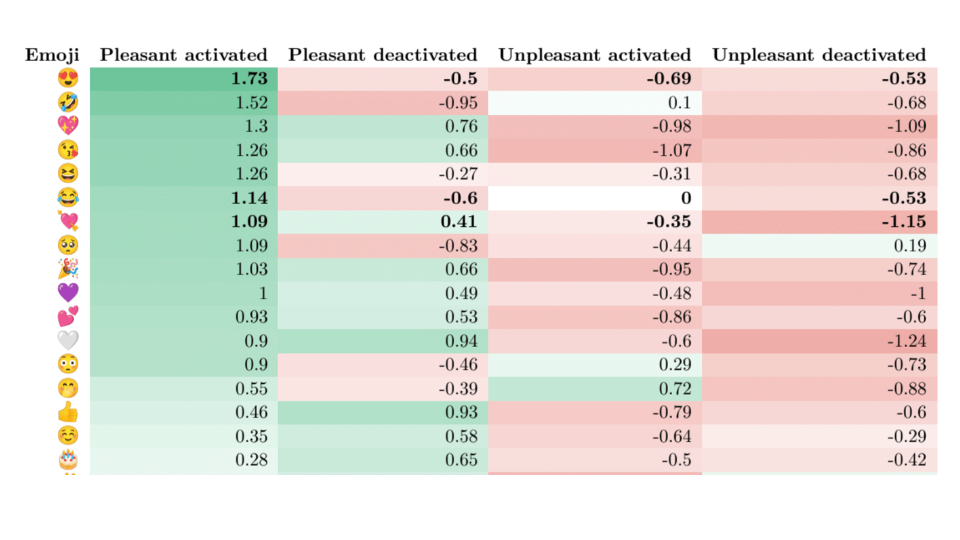
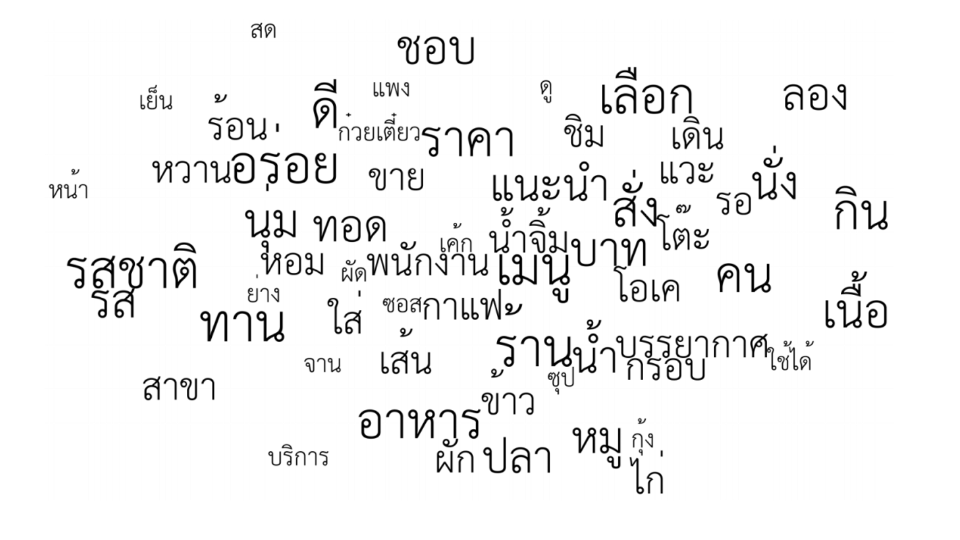
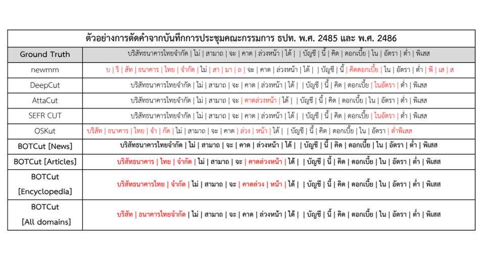
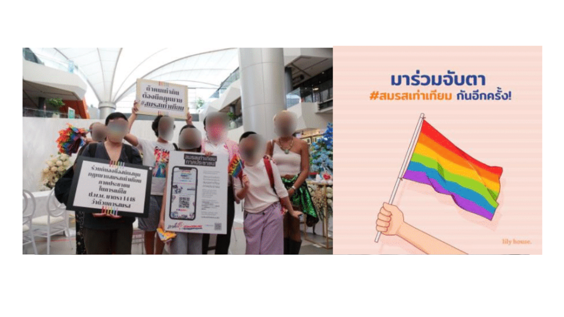
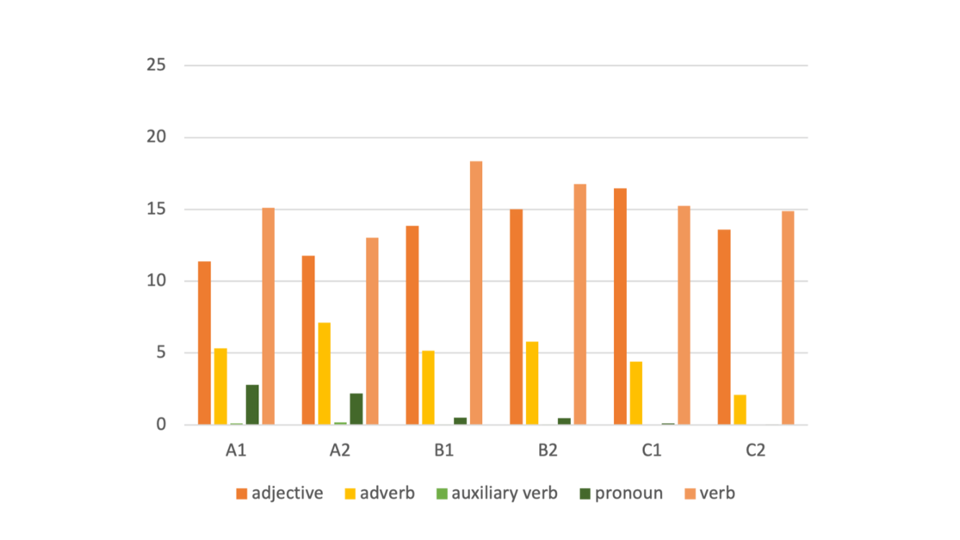
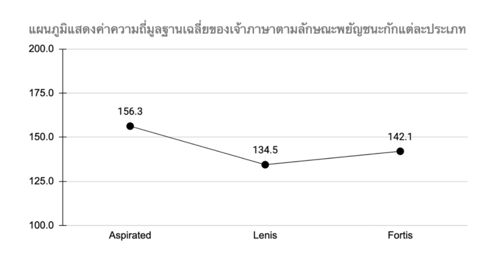
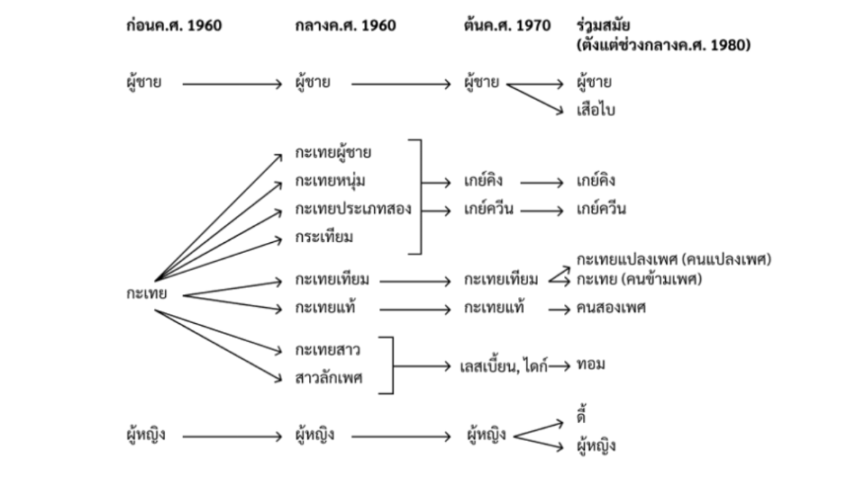
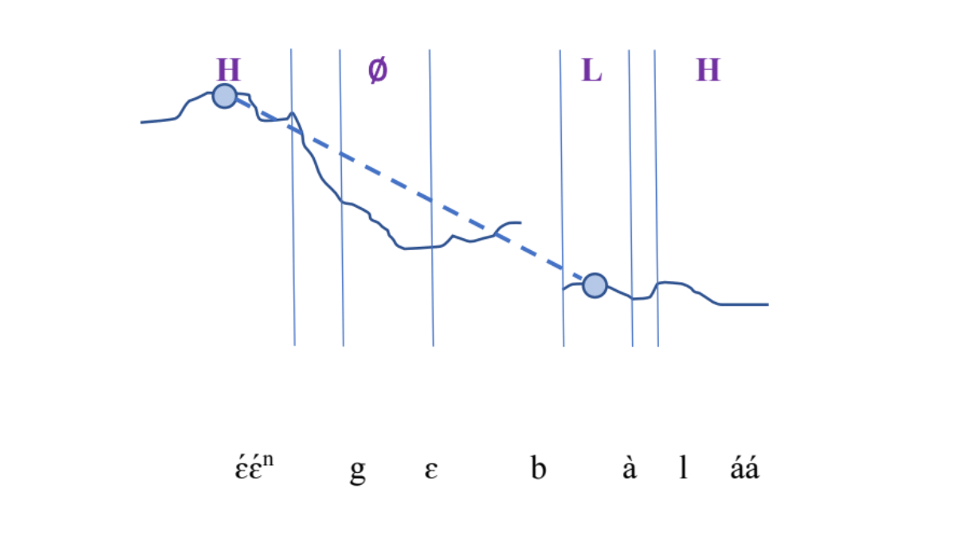

Senior Project
นิสิตแลงเทคชั้นปีที่ 4 มีโอกาสได้ใช้ทั้งทักษะการเรียนที่ได้สั่งสมมาตลอดหลักสูตรเพื่อสร้างสรรค์ผลงานซีเนียร์โปรเจกต์ที่ตนเองสนใจ ไม่ว่าจะเป็นสายภาษาศาสตร์ สายมนุษยศาสตร์ดิจิทัล สาย NLP หรือกลุ่มผสมระหว่างสองศาสตร์ ภายใต้ทีมอาจารย์ที่เป็นผู้เชี่ยวชาญในการพร้อมให้คำปรึกษาและแนะแนวหนทางในการทำโปรเจกต์ตลอดปีการศึกษา
นิสิตจะต้องทำซีเนียร์โปรเจกต์จำนวน 2 เทอม (ตลอด 4 ปี) ซึ่งอาจจะทำเทอมละหนึ่งโปรเจกต์ หรือทำโปรเจกต์หนึ่งภายในระยะเวลาสองเทอม ซีเนียร์โปรเจกต์ประกอบไปด้วย โครงการเทคโนโลยีภาษา (ภาษาศาสตร์ และ เทคโนโลยีภาษา) และโครงการสารสนเทศศึกษา
ในเทอมแรก นิสิตสามารถเลือกระหว่าง
2209491 โครงการเทคโนโลยีภาษา 1 (Project in Language Technology I) หรือ
2206491 โครงการสารสนเทศศึกษา 1 (Project in Information Studies I)
และในเทอมที่สอง นิสิตสามารถเลือกระหว่าง
2209492 โครงการเทคโนโลยีภาษา 2 (Project in Language Technology II) หรือ
2206492 โครงการสารสนเทศศึกษา 2 (Project in Information Studies II)
นิสิตจะต้องทำซีเนียร์โปรเจกต์จำนวน 2 เทอม (ตลอด 4 ปี) ซึ่งอาจจะทำเทอมละหนึ่งโปรเจกต์ หรือทำโปรเจกต์หนึ่งภายในระยะเวลาสองเทอม ซีเนียร์โปรเจกต์ประกอบไปด้วย โครงการเทคโนโลยีภาษา (ภาษาศาสตร์ และ เทคโนโลยีภาษา) และโครงการสารสนเทศศึกษา
ในเทอมแรก นิสิตสามารถเลือกระหว่าง
2209491 โครงการเทคโนโลยีภาษา 1 (Project in Language Technology I) หรือ
2206491 โครงการสารสนเทศศึกษา 1 (Project in Information Studies I)
และในเทอมที่สอง นิสิตสามารถเลือกระหว่าง
2209492 โครงการเทคโนโลยีภาษา 2 (Project in Language Technology II) หรือ
2206492 โครงการสารสนเทศศึกษา 2 (Project in Information Studies II)
Senior Project Showcase

Long live the king: The indication of moods by emojis and the correlation of moods with Thai political crisis in 2019-2020
Student Name: ภรภัทรวัชร์ อิศราวงศ์
Adviser: รศ.ดร.ธรรพงศ์ ชาวรัชนุกูล

เหนือกว่าเวิร์ดคลาวด์: การแสดงตัวบทให้เป็นภาพเชิงความหมาย
Student Name: เกษราภรณ์ ฤาชัย
Adviser: รศ.ดร.อรรถพล ธำรงรัตนฤทธิ์

การตัดคำภาษาไทยจากเอกสารรายงานการประชุมของคณะกรรมการธนาคารแห่งประเทศไทย
Student Name: กานต์ชนิต พิศพันธุ์
Adviser: รศ.ดร.ทรงพันธ์ เจิมประยงค์

การวิเคราะห์เนื้อหาที่ปรากฏภายใต้แฮชแท็ก #สมรสเท่าเทียม ในสื่อสังคมทวิตเตอร์ (Twitter)
Student Name: สุพิชฌาย์ เปี่ยมนิติกร
Adviser: ผศ.ดร.วชิราภรณ์ คลังธนบูรณ์

การศึกษาหนังสือสอนภาษาไทยสำหรับผู้เรียนชาวต่างชาติของ CTFL (Center For Thai As A Foreign Language) เทียบกับมาตรฐาน CEFR
Student Name: รินทราย พงษ์วะสา
Adviser: รศ.ดร.ณัฏฐนันท์ จันทร์เจ้าฉาย

การศึกษาค่าทางกลสัทศาสตร์ของพยัญชนะกักภาษาเกาหลีที่ออกเสียงโดยผู้พูดภาษาไทยเป็นภาษาแม่เพื่อการพัฒนาสื่อการสอนแบบโสตทัศนวิธี
Student Name: กฤษฎา แพทย์เจริญ
Adviser: ผศ.ดร.ศุจิณัฐ จิตวิริยนนท์

อนุภาคท้ายระบุความสุภาพและสรรพนามบุรุษที่หนึ่งที่เป็นกลางทางเพศในภาษาไทย
Student Name: ธิติวุฒิ โสมมูล
Adviser: ผศ.ดร.ภาวดี สายสุวรรณ

On the acoustic reality of “toneless” morphemes in Thai: Preliminary investigations through sequence-internal final particles
Student Name: รฐนนท์ เจียมสันดุษฎี
Adviser: รศ.ดร.พิทยาวัฒน์ พิทยาภรณ์
การเปรียบเทียบลักษณะการใช้ภาษาของ disinformation บนสื่อสังคมออนไลน์ ช่วงก่อนเกิด และช่วงที่เกิด COVID-19
Student Name: -
Adviser: ผศ.ดร.ทิพยา จินตโกวิท
สมรรถนะทางวัฒนธรรมสําหรับผู้ใช้สารสนเทศผ่านดิจิทัลคอลเล็กชันบนเว็บไซต์ห้องสมุด หอจดหมายเหตุ และพิพิธภัณฑ์
Student Name: -
Adviser: อาจารย์ ดร.สรคม ดิสสะมาน
(We're currently working on updating more projects, stay tuned for updates!)